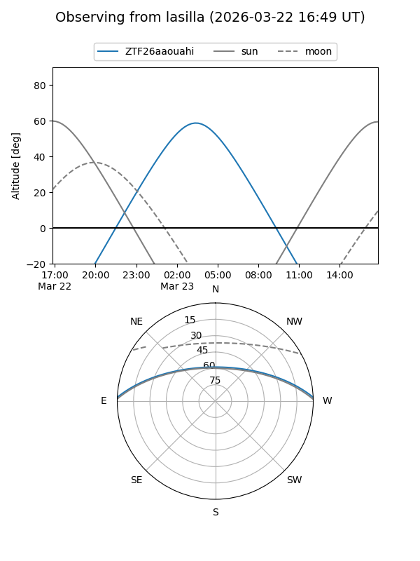
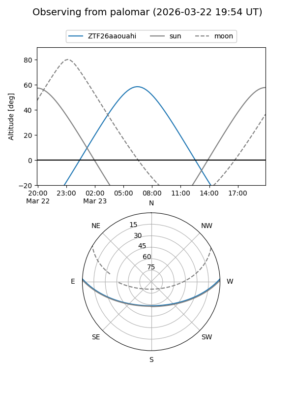

ZTF26aaouahi
Target ZTF26aaouahi at 2026-03-23 07:43
Aliases and brokers:
FINK: link
Lasair: link
ALeRCE: link
alt names
ZTF26aaouahi (ztf,fink_ztf)
Coordinates:
equatorial (ra, dec) = 160.5494,+2.09059
equatorial (HMS+DMS) = 10:42:11.85,+02:05:26.13
galactic (l, b) = (246.3660,+50.20350)
Flags:
Photometry:
last ztfg=17.29
1 ztfg detections
Lightcurve
Visibility


Additional plots